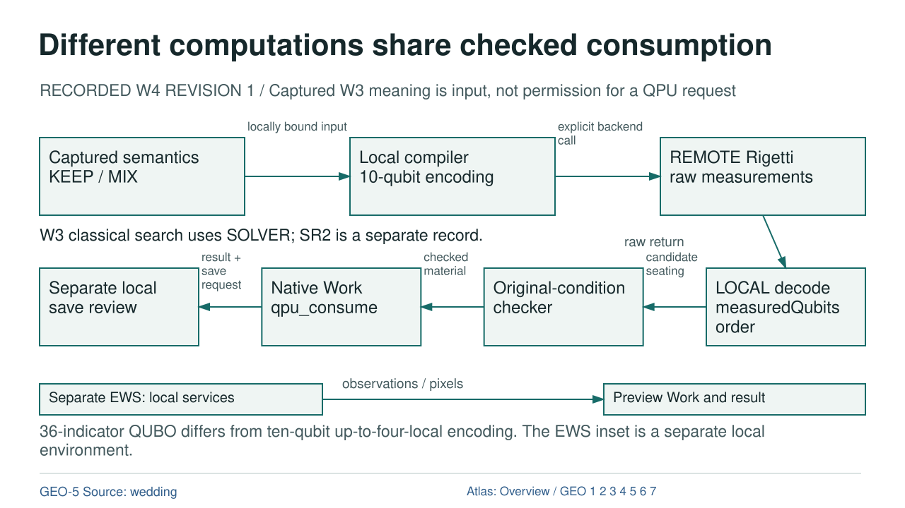

Different computations share checked consumption

Diagram text equivalent
- Different computations share checked consumption
- RECORDED W4 REVISION 1 / Captured W3 meaning is input, not permission for a QPU request
- PROPOSAL: Captured semantics KEEP / MIX
- Captured semantics KEEP / MIX
- COMPILER: Local compiler 10-qubit encoding
- Local compiler 10-qubit encoding
- QPU: REMOTE Rigetti raw measurements
- REMOTE Rigetti raw measurements
- DATA: locally bound input
- locally bound input
- EXECUTION: explicit backend call
- explicit backend call
- DECODER: LOCAL decode measuredQubits order
- LOCAL decode measuredQubits order
- CHECKER: Original-condition checker
- Original-condition checker
- CONSUMPTION: Native Work qpu_consume
- Native Work qpu_consume
- ROOT: Separate local save review
- Separate local save review
- DATA: candidate seating
- candidate seating
- DATA: checked material
- checked material
- DATA: result + save request
- result + save request
- DATA: raw return
- raw return
- W3 classical search uses SOLVER; SR2 is a separate record.
- ENV: Separate EWS: local services
- Separate EWS: local services
- WORK: Preview Work and result
- Preview Work and result
- DATA: observations / pixels
- observations / pixels
- 36-indicator QUBO differs from ten-qubit up-to-four-local encoding. The EWS inset is a separate local environment.
- rule
- GEO-5 Source: wedding
- Atlas: Overview / GEO 1 2 3 4 5 6 7
RECORDED W4 REVISION 1 / Captured W3 meaning is input, not permission for a QPU request
OVERVIEW | GEO-1 | GEO-2 | GEO-3 | GEO-4 | GEO-5 | GEO-6 | GEO-7
Text Equivalent
Different computations share checked consumption
RECORDED W4 REVISION 1 / Captured W3 meaning is input, not permission for a QPU request
Captured semantics KEEP / MIX
Local compiler 10-qubit encoding
REMOTE Rigetti raw measurements
locally bound input
explicit backend call
LOCAL decode measuredQubits order
Original-condition checker
Native Work qpu_consume
Separate local save review
candidate seating
checked material
result + save request
raw return
W3 classical search uses SOLVER; SR2 is a separate record.
Separate EWS: local services
Preview Work and result
observations / pixels
36-indicator QUBO differs from ten-qubit up-to-four-local encoding. The EWS inset is a separate local environment.
GEO-5 Source: wedding
Atlas: Overview / GEO 1 2 3 4 5 6 7
Exact Relations
- PROPOSAL to COMPILER: DATA, locally bound input.
- COMPILER to QPU: EXECUTION, explicit backend call.
- DECODER to CHECKER: DATA, candidate seating.
- CHECKER to CONSUMPTION: DATA, checked material.
- CONSUMPTION to ROOT: DATA, result + save request.
- QPU to DECODER: DATA, raw return.
- ENV to WORK: DATA, observations / pixels.
Sources and Boundary
Colour is supplementary. Relation labels state what crosses each edge. Editorial ordering does not establish new runtime authority.